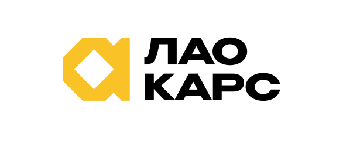

UI Kit & Guideline
Design System · v1.0
Гайдлайн бренда «ЛАО КАРС»
Тёмный, премиальный, немного технологичный визуальный язык для сайта импорта автомобилей и автосервиса. Один акцентный цвет, строгая типографика, сдержанная анимация.
01 · Логотип
Использование логотипа

На тёмном фоне — используется версия с белым текстом и жёлтым знаком (logo-white.png), прозрачный фон.
На светлом фоне — оригинальная версия с чёрным текстом (для документов, презентаций, счетов).
Минимальная высота — 24px в интерфейсе, 20px в футере/на печати.
Охранное поле — не менее высоты знака-ромба со всех сторон. Не растягивать, не менять пропорции знака и текста.
Не допускается: перекрашивать знак, размещать на пёстрых фото без плашки, использовать тень или обводку.
02 · Цвет
Палитра
Фон
Base / Page
oklch(0.13 0.004 60)
Base / Section Alt
oklch(0.16 0.005 60)
Surface / Card
oklch(0.185 0.006 60)
Base / Deep (тикер)
oklch(0.1 0.004 60)
Акцент
Accent / Yellow
#f9c227
Accent / Hover
#fbd04f
Accent / Tint 14%
rgba(249,194,39,0.14)
Accent / Border 50%
rgba(249,194,39,0.5)
Текст
Aa Текст
Primary
oklch(0.97 0.003 60)
Aa Текст
Muted
oklch(0.6–0.75 0.01 60)
Aa Текст
Faint / Caption
oklch(0.5 0.01 60)
Плейсхолдер-фото
Photo-slot backing
oklch(0.87 0.01 60)
Правило: не более двух фоновых оттенков на экране (base + section alt) и один акцентный цвет. Акцент — для CTA, цен, статусов «в наличии», активных состояний и 1–2 ключевых слов в заголовке. Не заливать акцентом большие площади.
03 · Типографика
Шрифтовая пара
Заголовки
Unbounded
Веса 500 (H2–H3), 600 (H1, акценты, цены), 700–800 (числа, крупные цифры).
Основной текст
Manrope
Веса 400 (текст), 500 (лейблы, надписи), 600–700 (кнопки, акценты в тексте).
H1 / 44–64
Автомобили из Китая
H2 / 30–38
Рекомендуемые автомобили
H3 / 18–24
Детейлинг
Eyebrow / 13
Почему мы
Body / 15–18
Подбор, растаможка и доставка автомобиля любой сложности — и полный автосервис для вашего парка.
Caption / 12–13
Гибрид · Полный привод · 12 000 км
04 · Кнопки и теги
Элементы управления
Кнопки — всегда pill (radius 999px). Первичная — жёлтая заливка, используется 1 раз на экран для главного действия. Вторичная — обводка. Hover: лёгкий подъём (translateY −2px) + смена оттенка/прозрачности, transition 0.2s.
В наличии
Под заказ
01
A
Статус-теги — pill, обводка в цвет статуса, без заливки. Иконок-иллюстраций нет: место иконки занимают номер/буква-монограмма в круге или квадрате с акцентной подложкой 14%.
05 · Поля форм
Формы заявки
Поля — радиус 10px, фон темнее контейнера (base), обводка 15% белого, при фокусе — акцентная обводка 70%. Плейсхолдер — muted. Кнопка отправки — как первичная кнопка.
06 · Карточки
Карточка автомобиля & карточка услуги
A
Автосервис
ТО, диагностика и ремонт для всех марок.
Подробнее →
★★★★★
«Заказывал автомобиль из Китая — все этапы держали в курсе».
Сергей Морозов
Радиус карточек — 18px. Фон — surface-card на базовом фоне, либо section-alt на карточках внутри секции того же тона. Hover: подъём на 4–6px + мягкая тень + акцентная обводка 30–35%. Изображения — всегда через плейсхолдер image-slot с подписью, что должно быть на фото.
07 · Сетка и отступы
Spacing & radius scale
64px
боковые поля секций
120px
вертикальный ритм секций
32px
gap между карточками
18–20px
radius карточек/панелей
999px
radius кнопок/тегов
08 · Анимация
Motion-принципы
Hover-подъём
translateY(−2…−6px) + тень/обводка, 0.2–0.25s ease. На кнопках, карточках, иконках-плашках.
Fade-up при загрузке
Hero-текст появляется с opacity 0→1 и translateY 18px→0 за 0.7s — используется один раз на страницу, не на каждый блок.
Никогда не анимировать более 2 свойств одновременно, не использовать bounce/эластичные easing — только ease/ease-out, сдержанно и премиально.